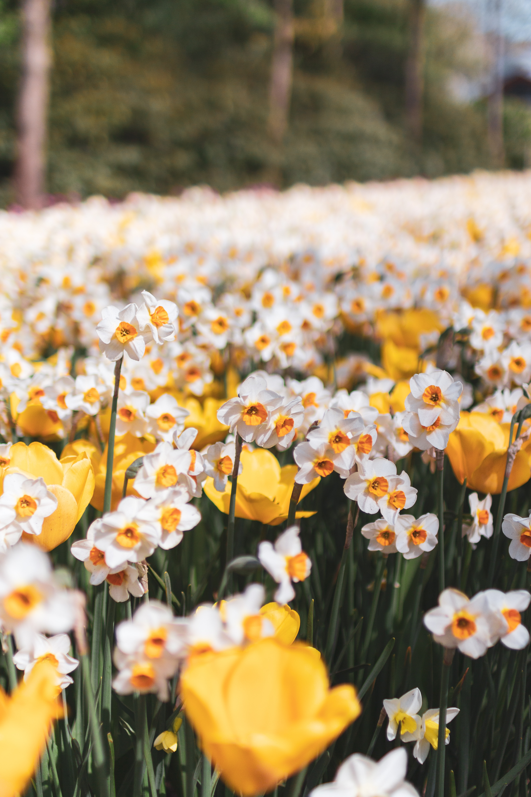
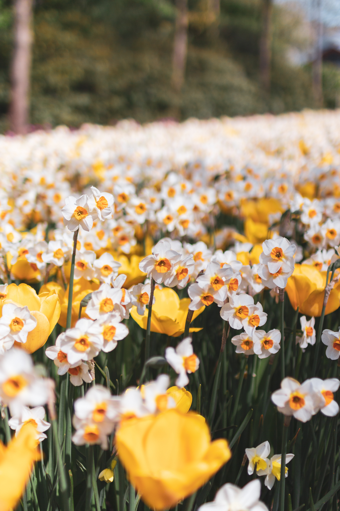

Spring season tips for plants
As the world awakens from the frosty slumber of winter, the arrival of spring brings new life and vibrant energy to your garden. It's the perfect time to rejuvenate your outdoor space and prepare it for a season of growth and blossoming beauty. With the right care and strategic practices, you can revitalize your plants and set the stage for a flourishing garden filled with colorful blooms and lush foliage. Here are some essential spring season tips to help your plants thrive and flourish during this transformative time of the year.
 
